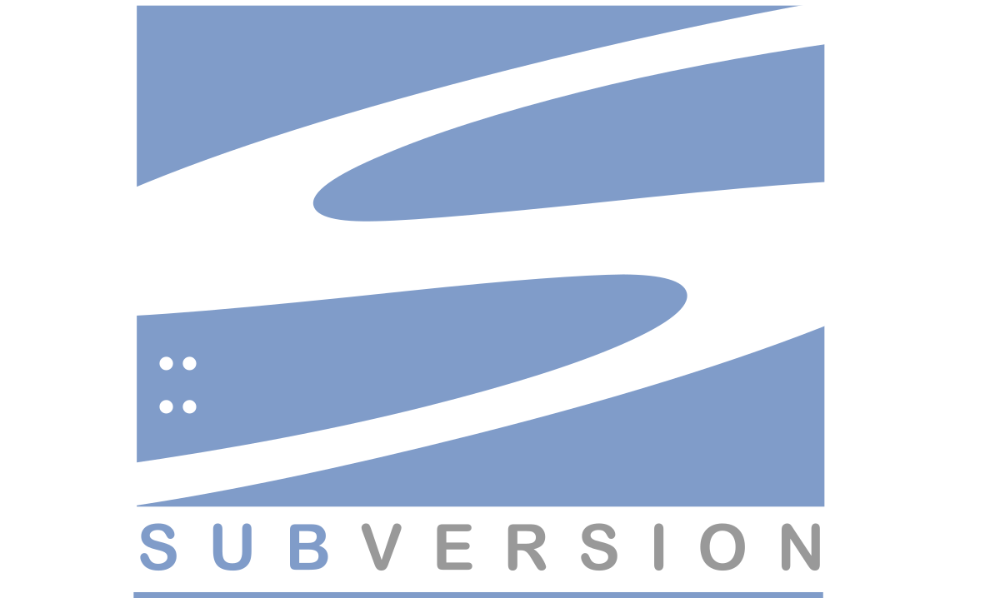

Possui um repositório central em um servidor com controle de versões.
Depende do servidor
EX: Software Subversion
Possui um repositório local
com controle de versões.Atualizações no repositori central Independente do servidor
EX: Softwares Mercurial, Git
É um software livre de versionamento que surgiu para o desenvolvimento do Kernel do Linux, foi projetado e desenvolvido por Linus Torvalds em 2005
Cada diretório de trabalho do Git é um repositorio com um histórico completo e habilidade total de acompanhamento das revisões, não depende de acesso a uma rede ou a um servidor central.
Link site: https://git-scm.com

Plataforma de hospedagem de código-fonte e arquivos com controle de versão. Surgiu em 2008 e foi adquirido em 2018 pela Microsoft por US$ 7,5 bilhões.
Link site: https://github.com